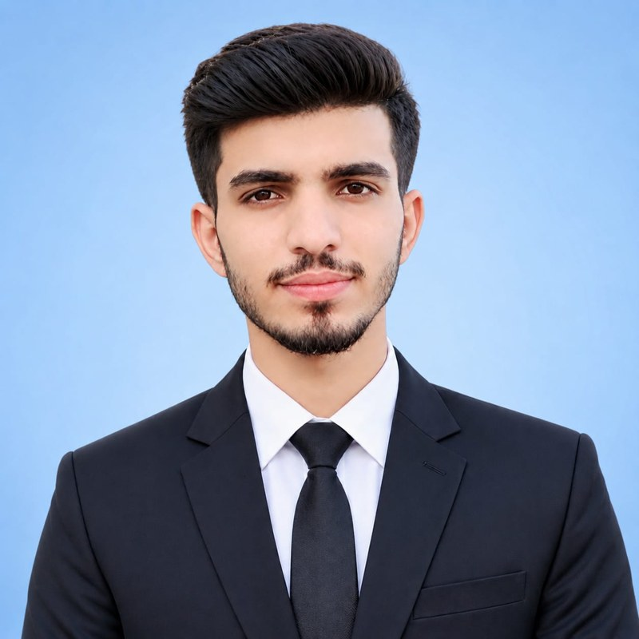

2019 to 2024
BS AHS Surgery / OT
University of Sargodha, Sargodha
Grade ASurgical Technologist
I prepare the operating room, keep the sterile field safe and support surgeons through every procedure, from planned operations to emergency cases.

I am a Surgical Technologist with hands-on experience in operation theatre procedures, emergency case handling and CSSD (Central Sterile Supply Department) management. I assist surgeons during operations, maintain a sterile environment, prepare surgical instruments and keep patient safety first. I am detail-oriented and committed to high-quality support in every surgical and emergency care setting.
Niazi Medical & Dental College, Sargodha
January 2026 to present
Nishtar 2 Tertiary Care Hospital, Multan
January 2025 to December 2025
Rehman Medical Hospital, Multan
November 2024 to January 2025
2019 to 2024
University of Sargodha, Sargodha
Grade A2017 to 2019
Rashid Minhas High School, Alipur
Grade A+Secondary school
Government High School, Mahra
Grade A+Mother tongueUrdu
Other languageEnglish
Need a surgical technologist for your team? Send me a message or call. I am based in Muzaffargarh, Pakistan.